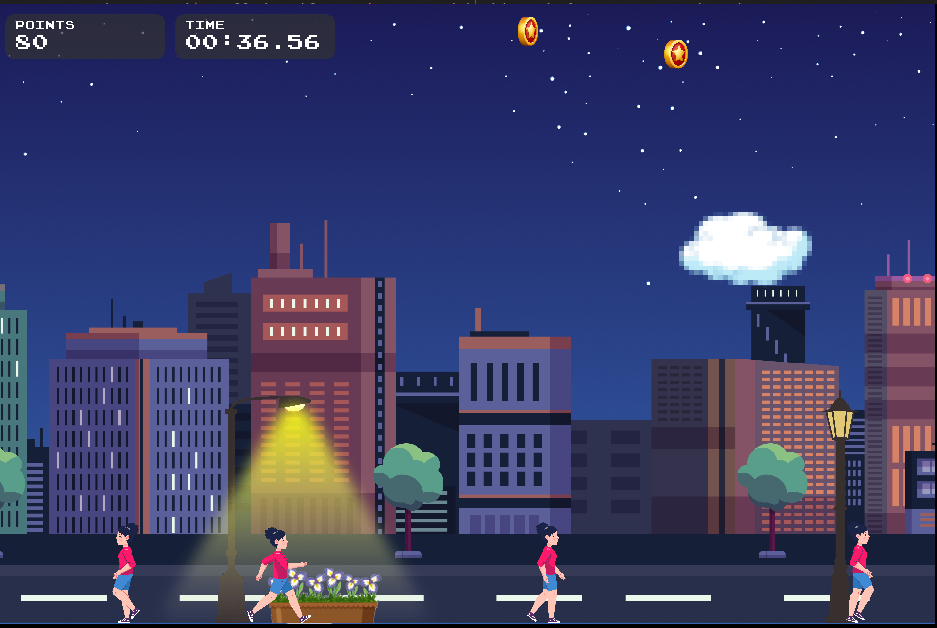
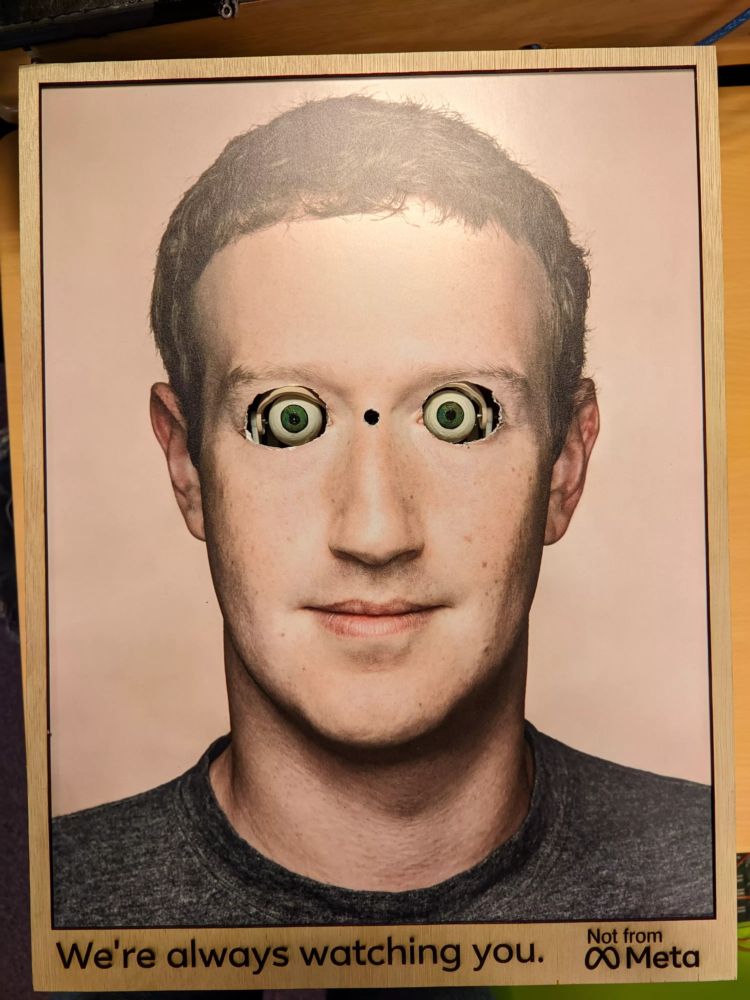
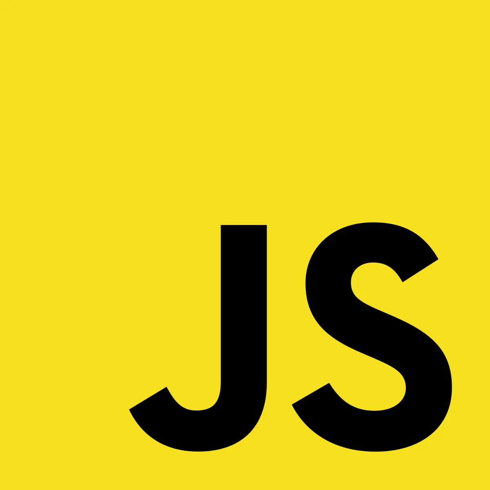

Projects
You can find more projects on my github profile

PokéHunt


2020-24 active
A Pokémon app in Discord
PokéHunt is a Pokémon app to catch, collect, trade and battle Pokémon inside of Discord. As of mid 2024, the app has 85k users and 5.5 million Pokémon whilst being used in 9.5k guilds (groups).
I learned coding in a team and working with a big project. Since this was one of my first projects, it also gave me experience with coding in general.
More info Website InviteThis project started when the biggest Pokémon app on Discord (Pokécord) decided to shut down. After the announcement many small Pokémon apps quickly appeared, including PokéHunt (before: Pokecord 2.0). I already had made a basic Pokémon app before, and together with some of my friends we turned it into a complete functional Discord app.
You can choose your own starter Pokémon from each generation, from Generation Kanto all the way to Generation Galar. When typing/chatting in chat, random Pokémon (based on their rarity) will spawn and you can catch them. However, you need to know/guess the name to catch it (there's a hint command if you need a small hint). Every 10 minutes you can also hunt for a random Pokémon from the wild.
To get a specific Pokémon, you can search on the market and buy Pokémon from others. This way you can get unique and rare Pokémon! And if you do have a rare Pokémon, you can put it on the market for other people to buy it. You can also put it in an auction, this way other players can bid for your Pokémon. Additionally, you can always directly trade Pokémon and currency with other players.
There are also a few quests you should complete with various rewards like redeems and credits (in-game currency). As a guild (group) owner, you have many settings you can change like in which channel Pokémon should (not) spawn and redirect all spawns into a specific channel.
Airport check-in robot


2024 finished
A simple sorting robot based on QR codes
This robot simulates the complete check-in at an airport, and is made by a group of 6 CS students (including me). Due to our robot having 0 issues, having a creative idea and giving a good demo we received full marks for this project.
I learned basic electronics and SCRUM for this project. Sadly, the source code is not allowed to be public due to school policy.
More infoWe received an assigment to build a sorting robot based on some part of an airport system. We decided to go for a complete check-in system, including selecting the destination, taking the baggage and sending it to the correct plane. The robot is made of fischertechnik, and is controlled by a Raspberry pi and Arduino UNO.
It has a heavy focus on error handling, as this is a very important aspect of airport baggage handling. For this, it uses 5 sensors to make sure no baggage is lost and everything runs as it is supposed to. We tackled more than 15 different failure points, ranging from cable disconnection to hardware failure and belt blockage.
It starts by selecting the correct destination on the touchscreen, after which an unique QR code gets printed which you can stick on your baggage. Then, after placing the baggage on the belt it will go into the machine, where a camera scans the QR code and sorts it accordingly to one of the three destinations.
It keeps track of the amount of baggage in the plane storage, and there is a button to simulate a plane taking off (thus storage being emptied). There's also a debug panel for manual control of the belt and sorting arm, aswell as a live status list of the sensor outputs and the state of the machine.

CloudRush

2023 finished
A two-dimensional, arcade style game
CloudRush is a simple Java game made with a friend of mine. It was an assignment to learn the basics of java development, and we got full marks for it.
I learned about Java and game development with this project.
More info GithubIn this game, you are a cloud, which can generate rain and lightnings. You're going through various cities, filled with people, flowers and street lanterns. With the rain you can water the flowers, but also make people get wet. By striking lightning on street lanterns, you can turn them on and/or off, but if you miss, you might hit and electrocute a pedestrian. During the game, there will appear various bonuses/debuffs in the sky, which can be collected to uncover their positive (or negative!) effect.
The goal is to collect as many points as possible. You get points for different actions, like watering the flowers and (deducted) points for making people wet. Actions have different weights, so you don't get the same amount of points for a different action. Those weights are also affected by the collected bonuses/debuffs, so make sure to collect those too. After the game ends, you can type in your nickname and admire your score on the leaderboard in the main menu.

Animatronic eyes
2022 finished
A spooky Arduino project
This is a simple Arduino UNO project, where the 3d printed eyes will follow you when you walk past.
I learned about simple soldering and 3d printing skills while creating this project.
More info GithubFor computer science we (a friend of mine and me) had to create a project using an Arduino UNO. At first glance we thought creating animatronic eyes would be too difficult, but after some research it seemed doable.
The concept of this project is that when you walk past, the eyes should follow you. We've achieved that using the ADNS 3080 sensor, which is an optical flow sensor. The ADNS 3080 measures where there is movement, and outputs x and y coördinates. After that the Arduino calculates how much the servo's should move and sends the signal to move them.
The only downside/problem with this sensor is that when you wear dark clothes, the sensor doesn't tracks you as well as when you wear light clothes. We've tried to fix this problem by adding IR leds, however, that still didn't fix it. Other than that, it works perfectly, despite "only" having 30x30 pixels.
We decided to put the eyes in a box behind a picture of Mark Zuckerberg, to make a privacy statement. This way it looks like he's always watching you (as his eyes will follow you when you walk past him).

RStorage

2021 not in active development
An encrypted cloud file storage.
RStorage is a way to store your files distributed and encrypted across multiple servers. There is a panel (master), which has multiple storage nodes. You upload a file to the panel, which will cut it into chunks and send it encrypted to the nodes.
I learned a lot about encryption, file streaming and multi threading with this project.
More info GithubThe idea of RStorage is that you have one panel, which is like the "master". This is meant to be installed on a PC, but it can be installed on a server too (but that's not recommended). You also have (multiple) nodes, which is where the encrypted files will be stored. The files will be split up into parts and all parts will be spread over all nodes. The encryption key is stored with the panel and there is no way for the nodes to decrypt the parts. It uses "military grade" AES-256 encryption.
If you upload a file, the file is sent using a stream to the panel. After that the panel cuts the stream into chunks, and sends each chunk to a worker (for multi-threading). After that the worker encrypts the chunk (using AES-256) with the key belonging to a specific node (each node has it's own unique key, which is only known to the panel) and sends the encrypted stream to the node (encrypted over TLS), which then stores it on it's disk.
For downloading it's the same process, but then reversed.
Everything is done using streams, because else you need A LOT of memory to store each file in plaintext and encrypted (or add unnecesary disk read/writes).
This project is more meant for myself and to learn from rather than to be actually used. There are many better alternatives like for example cryptomator and rclone to use encryption with cloud storage.

Chattin
2020 discontinued
A simple chat app
Chattin is a simple chat app to securely talk with others. This project is meant as a learning project for myself, and shouldn't be used.
I learned a lot about Electron (to make desktop apps) and websockets while making this project.
More info Github DownloadChattin is an app where you can talk to others with "military grade" encryption. In order to talk with someone (or multiple people), you both need to join the same group. Messages aren't stored anywhere so if you close the app all messages will be lost!
This project is more meant for myself and to learn from rather than to be actually used. There are many (better) chat apps, like for example matrix.org. Chattin requires a central server to be running, which I shut down, so you can't use it (anymore)